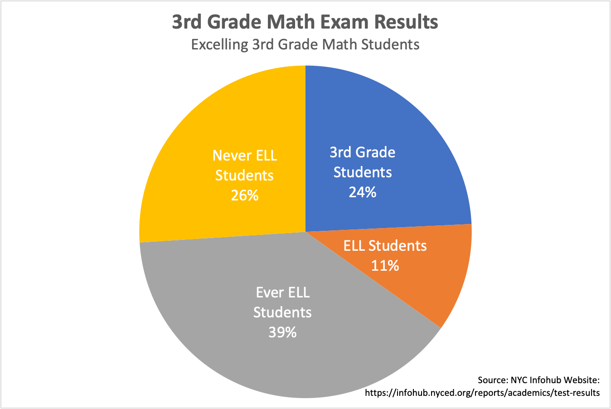
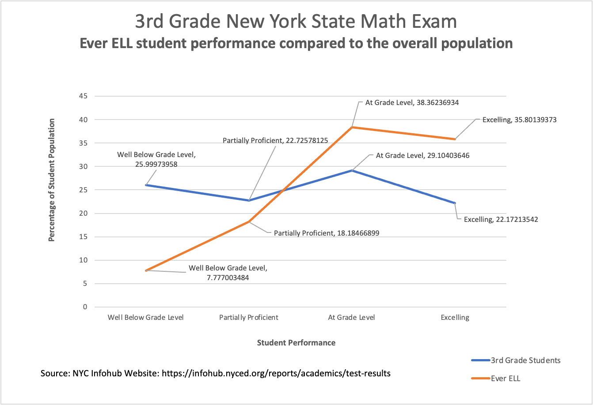

ELL Students Failing by Design
Rafael
Concepcion
As
more students who do not speak English enter New York City classrooms, they can
be assured of one thing: They will be taught to fail by design.
The
No Child Left Behind act of 2001 established a series of programs to help ELL’s
- students who demonstrated limited proficiency - with English proficiency as
well as educational content to help them succeed. In states like New York,
where the ELL population is estimated at 10 percent of the overall student
population, these students are one and half times more likely to perform under
grade level at New York State math examinations according to New York City Infohub data.
Beatriz Barrajas struggles with
helping her third-grade daughter Danelia through
basic multiplication and division.
“When my daughter comes home, I need to try to translate the
math problems into Spanish as best I can, before I can explain it to her to
help her,” Barrajas said. “My daughter has to
remember how she was taught to do the problem to translate it to teach me so I
can help her.”
For Barrajas, Danelia
serves both as interpreter and educator - hoping that the effort translates
back to someone who can help Danelia with her own
homework.
According to Farah Shihadeh, ELL
Instructional Coach for District 10 the types of services that a student
receives for English language support varies as they progress in a school
system.
“ELLs receive services with an English
Native Language teacher to help them with their language acquisition.
Elementary school students receive minutes in English Language Arts. Services
are more flexible in middle and high school in terms of what subject the
services need to be provided in.”
ELL’s that are beginning in a school program are known as
“Entering and Emerging” students. A
second category of ELL students are known as “Ever ELL” - students who are
Transitioning and Expanding. “Never ELL” students are students that demonstrate
a command of the English language.
In the elementary school system, Entering and Emerging
students receive 360 minutes of instruction a week. Transitioning and Expanding
students receive 180 minutes. Commanding students receive 90 minutes a week for
two years. For New York - whose educational program consists of 5-hour days,
this amounts to 24 percent of the overall student time for an ELL student. For Danelia, these
hours are dedicated to helping her become translator, educator, and student in
her home.
By Rafael Concepcion - Data Wrapper
According to NYC Infohub Data, 25.99
percent of non-ELL third-grade performed below grade
level at state math exams. ELL students however accounted for 41.9
percent. On the opposite end - non ELL students who excelled at the third-grade state math
exam accounted for 22.17 percent, while ELL students accounted for 9.67
percent.
The
change in math education from algorithmic memorization to a deeper
understanding of math concepts through more complex word problems accounts for
a big change in math test scores according to Jennifer Bontempi,
a math specialist and instructional designer with the Manlius Pebble Hill
School.
“In
today’s math classroom, there is a bigger push to understand why an algorithm
works rather than a memorization of facts,” Bontempi
said. “Understanding the difference
between ‘among’ and ‘not’ is more important to understanding math. You really
need to focus on ELA (English Language Arts) to have a deeper understanding of Math”
The semantics of English offer little comfort to Maria’s father
Jesús Barajas “there are people that have it worse than us. I know parents that
don’t even have the basic understanding of the old way of math, how could they
help their children.”
According to Shihadeh “Some of the
challenges could be that students do not have enough language skills to be able
to understand and solve word problems. Most students struggle with reading and
understanding word problems and ELLs may have a more difficult time with that.”
This shift to nuanced word problems is a big source of frustration for Beatriz. “The educational system of my older children.. when my older children went to school, I used to help them with the problems and there weren’t any problems. The problems used to come easier in English … like the themes were a little bit easier.. Now they are making the math problems really jumbled up. “
This level of confusion not only creates a greater gap of understanding between Beatriz and Danelia, but also with her older children as well. “I ask my older children when I have questions, because I translate everything, I’ll say ‘Ay, I don’t understand this..’ I have to read it two or three times and then more or less I explain it to her. And my other children say ‘Mami, we don’t understand this, we don’t understand what they are trying to say, That - they didn’t teach us.”
A greater level of understanding of English does show better test performance for Spanish speaking students. In New York State, students that have received ELL services but have tested out with a proficiency of English are categorized as Ever ELL. Students that are Spanish speaking but do not require ELL services are categorized as Never ELL students. In both categories, these ELL students demonstrate a greater command of English.
In New York State math exam scores, Never ELL students
performing below grade level only accounted for 24% of the total third-grade population
- lower than the 42% of ELL students and lower than the 26% of non-ELL students.  By Rafael Concepcion - Microsoft
Excel Source: NYC Infohub
Website: https://infohub.nyced.org/reports/academics/test-results Ever ELL students also accounted for 39% of the excelling
math student population in third-grade state exams.  By Rafael Concepcion - Microsoft
Excel Source: NYC Infohub
Website: https://infohub.nyced.org/reports/academics/test-results Never ELL students also performed better, accounting for 26%
of excelling third-grade students - greater than the non-ELL population at 24%.
Knowing that Danelia will be more
successful as her command of English increases offers some hope for ELL
students in the United States but doesn’t ease the difficulty on the
journey. This difficulty will be evident
both in school and in millions of homes across the United States. “I want to help Danelia. I just
want to find a way to help her do the best.“ Danelia said. For ELL students and their parents - no
matter the language - this need should be easy to understand.